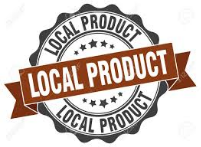
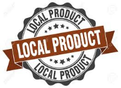

About Us
Name: Donatello Scarsi
Hometown: Pontinia, Italy
Donatello Scarsi first developed culinary skills producing and selling cheese. It was in Naples, however—the birthplace of pizza just an hour away from his hometown—where Scarsi went to study the art and craft of the pizzaiolo. After learning all things Neapolitan, among some of the best pizza makers in the world, Scarsi came to the United States ,at age 38, and opened several successful pizzerias before settling in Little Rock, Arkansas. Once here, tried a different idea: opening a pizza company specifically for colleges and universities. He named the A Slice of Life since it was an idea came up with when his oldest child started attending college.
Community Involvement
At A Slice of Life, we are firm believers in contributing to our our community. By providing food or donations, we show we care by striving to brighten the lives of people around us.
Keep your eyes open for our annual donation promotion, where one dollar
from every slice of pizza sold at all of our stores during lunch will go to
a select charity. We contribute to various elementary, high school, and university
events, including Pizza Days and special events. Click the link below to invite us to
an event.
Invite Us
Nutritional Information
A note for all pizza lovers with allergies, gluten or lactose intolerance, or health concerns:
A Slice of Life is pleased to provide you with a number of flexible options to make sure your pizza meets your health needs. We want you to be able to enjoy our pizza as much as we do!
.png) 

- Non-GMO - At A Slice of Life, we use Non-GMO ingredients. Non-GMO means non-genetically modified
organisms. GMOs (genetically modified organisms), are novel organisms created in a laboratory
using genetic modification/engineering techniques. Scientists and consumer and environmental
groups have cited many health and environmental risks with foods containing GMOs.
- Local Product - Our foods and other agricultural products (mainly our vegetables)
are grown or produced, processed and then sold within a our local area.
- Nut Free - All of our A Slice of Life locations are 100% nut free. We also don't use
any products that contain tree nuts (almonds, cashews, walnuts, etc.) or peanuts as ingredients.
- Recycle - We recycle glass, paper, plastic, and metals (such as aluminum).
Dead plants, fruit and vegetable scraps are recycled through composting.